ローソク足と酒田五法
この記事ではローソク足と酒田五法について簡単にまとめてある。
私は長期投資を前提に積み立てをしているので、売買のタイミングを考える機会は少ない。
しかし、知らないよりは知っている方が気休め程度かもしれないが、うまく立ち回れる可能性が高まる。
知っているか知らないかの小さな差が、結果に大きな差を与えるかもしれない。
スポットで購入しないにしても、積み立てたものはいつか必ず手放す時が来る。
そういった意味で言えば、定率売却し続けない限りは役に立つ日は来るだろう。
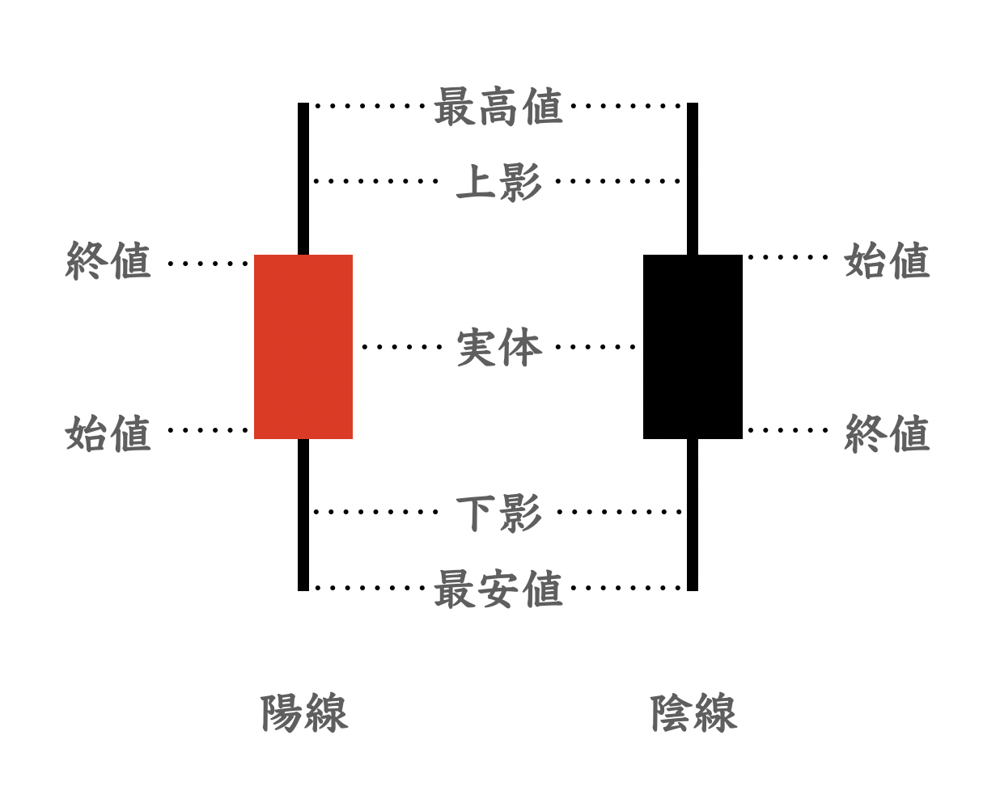
上影のことを上ひげ、下影のことを下ひげともいう。
実体は、始値から終値のことである。
陽線は、始値 ＜ 終値 であり、陽線が大きいほど買い圧力が強い。
陰線は、始値 ＞ 終値 であり、陰線が大きいほど売り圧力が強い。
私は陽線の時は上向きの矢印、陰線の時は下向きの矢印をイメージしている。
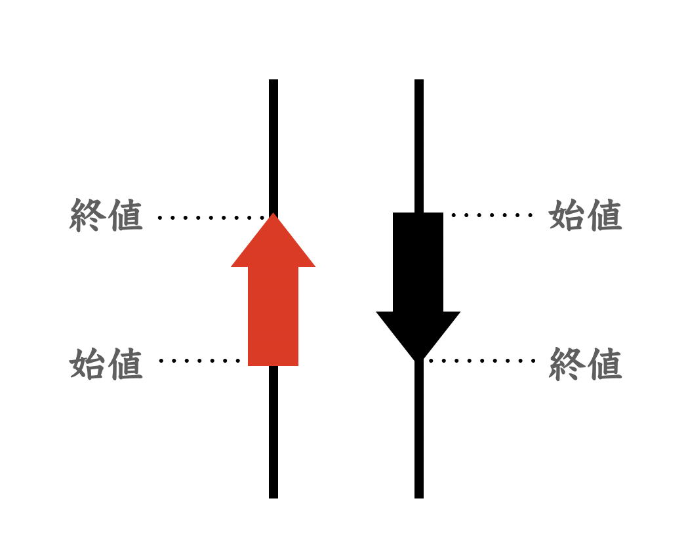
ローソク足と値動きは、下の画像のように表すことができる。（画像はイメージ）
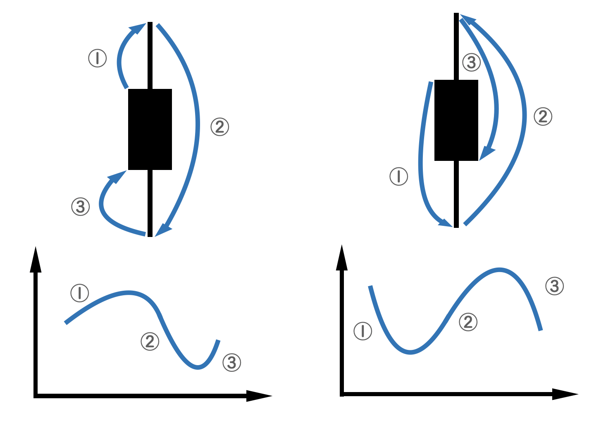
陰線で考えられるパターンは2通りで、
①②③の順番に、
もちろん実際のチャートがこんなに単純になるとは限らない。
①②③のそれぞれで最安値から最高値までの範囲内で乱高下している可能性もある。
ただローソク足から読み取れるのは4つの値なので上の図の簡単なパターンさえ理解できれば、ローソク足で表現される意味合いも理解できると思う。
（陽線も陰線同様）
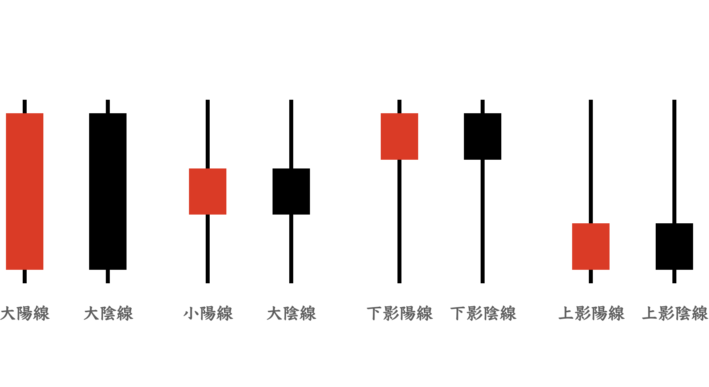
陰線、陽線に関わらず、実体が大きいほど勢いがあることを示す。（ベクトルみたい）
ひげが長いほど、振り戻し（反動）が大きいことを示す。
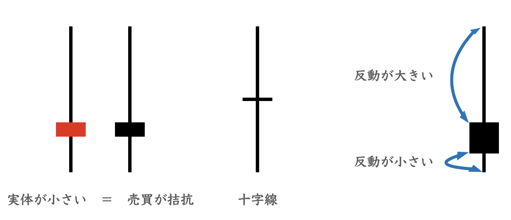
ひげが長いのは一時的に値上がり、あるいは値下がりしたが最終的には戻したということを意味する。
十字線（寄引同時線）は実体のないローソク足で、相場転換の予兆とされている。
ローソク足は基本的に一本だけで判断するものではない。
相場の中でのローソク足のパターンを考える。
一本のローソク足で矢印をイメージしたのと同様に、複数のローソク足も矢印で辿っていくイメージがわかりやすいと感じた。
もっと大雑把に矢印を引くなら下図の右のように大きな矢印を引いても良いかもしれない。
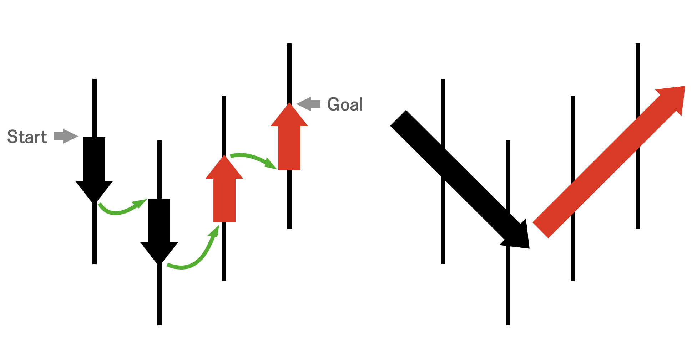
数年前に酒田市近くに立ち寄り、お世話になったことがあるので個人的にはなんだか親近感が湧く。
また色々落ち着いたら行きたいな。
五法はそれぞれ、兵・山・川・空・法 となっている。
赤三兵
三兵行進ともいう。
陽線が連続しているので強気相場と考える。
今後も上昇すると考え、順張り。
黒三兵
三羽烏ともいう。
陰線が連続しているので弱気相場と考える。
下落が継続すると考え、順張り。
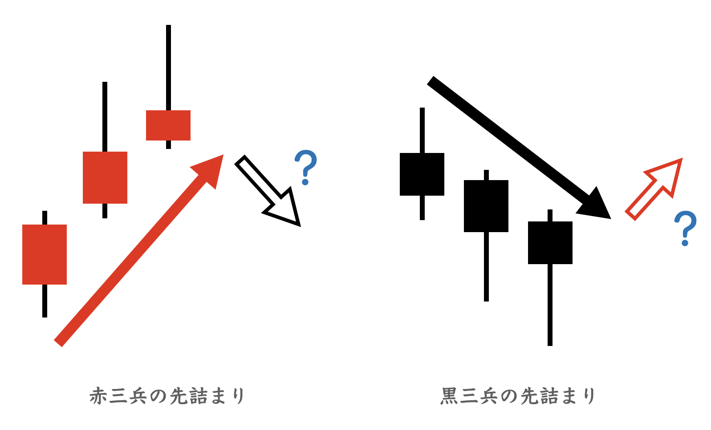
赤三兵の先詰まり
陽線が連続しているものの、上ひげが長く出ているパターン。
長い上ひげは相場が一時的に上昇したが、終値では下落したことを示す。
そのため継続した上昇は疑わしい。
黒三兵の先詰まり
陰線が連続しているものの、下ひげが長く出ているパターン。
長い下ひげは相場が一時的に下落したが、終値では上昇したことを示す。
そのため継続した下落は疑わしい。
三山 (Triple Top)
チャートが三つの山を形成。
3回も高値を更新できなかったから下がるだろうと考える。
三尊 (Head and Shoulders Top)
三山に類似しているが、真ん中の山が最も高くなる。
三山同様、下がると考える。
ダブルトップ
二つの山を形成。
三つの山より出現頻度は高いが、相場下落の予兆として使われる。
三川 (Triple Bottom)
三山の上下が反転したもの。
3回も底を打ったから上がるだろうと考える。
逆三尊 (Head and Shoulders Bottom)
三尊の逆。
三川同様、上がると考える。
ダブルボトム
二つの谷を形成。
三つの谷より出現頻度は高いが、相場上昇の予兆として使われる。
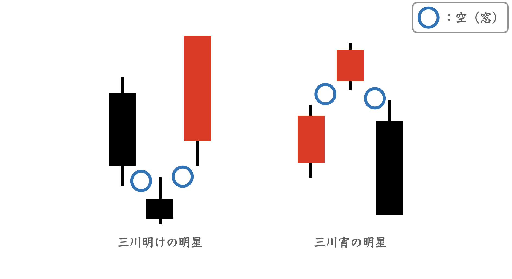
三川明けの明星
窓を開けるほど大きく下がったものの、２本目のローソク足の実体は小さい。
打って変わって反対方向に窓を開けて大きく上昇する。
三川宵の明星
窓を開けるほど大きく上がったものの、２本目のローソク足の実体は小さい。
打って変わって反対方向に窓を開けて大きく下落する。
三空踏み上げ
空（窓）ができるほど、相場が急激に上昇。
衝動的な心理に起因すると判断し、逆張りで下がると考える。
三空叩き込み
踏み上げの反対。
空（窓）ができるほど、相場が急激に下落。
衝動的な心理に起因すると判断し、逆張りで上がると考える。
ボックス相場では静観し、相場が動き出したら取引を開始する。
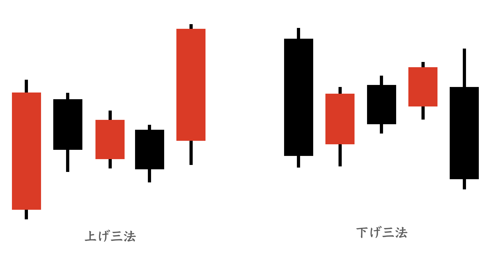
上げ三法
ボックス相場の高値を抜けたら、上昇すると考える。
下げ三法
ボックス相場の安値を抜けたら、下落すると考える。
テクニカルも大事かもしれないが、それ以上にメンタルが大事な気がした。
ローソク足や酒田五法だけを頼って判断するのではなく、他のシグナルも使って信頼性を高めたい。
2022/03/05
私は長期投資を前提に積み立てをしているので、売買のタイミングを考える機会は少ない。
しかし、知らないよりは知っている方が気休め程度かもしれないが、うまく立ち回れる可能性が高まる。
知っているか知らないかの小さな差が、結果に大きな差を与えるかもしれない。
スポットで購入しないにしても、積み立てたものはいつか必ず手放す時が来る。
そういった意味で言えば、定率売却し続けない限りは役に立つ日は来るだろう。
ローソク足
ローソク足の基本
下図のようにローソク足は4つの値（始値、高値、安値、終値）で構成される。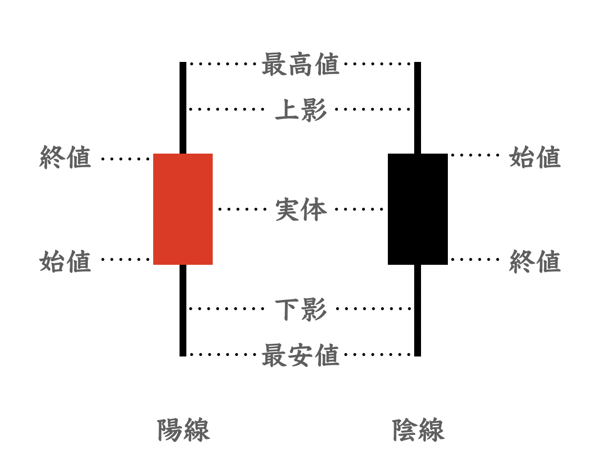
上影のことを上ひげ、下影のことを下ひげともいう。
実体は、始値から終値のことである。
陽線は、始値 ＜ 終値 であり、陽線が大きいほど買い圧力が強い。
陰線は、始値 ＞ 終値 であり、陰線が大きいほど売り圧力が強い。
私は陽線の時は上向きの矢印、陰線の時は下向きの矢印をイメージしている。
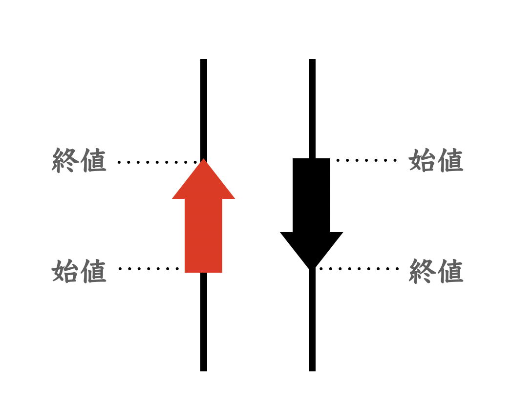
ローソク足と値動きは、下の画像のように表すことができる。（画像はイメージ）
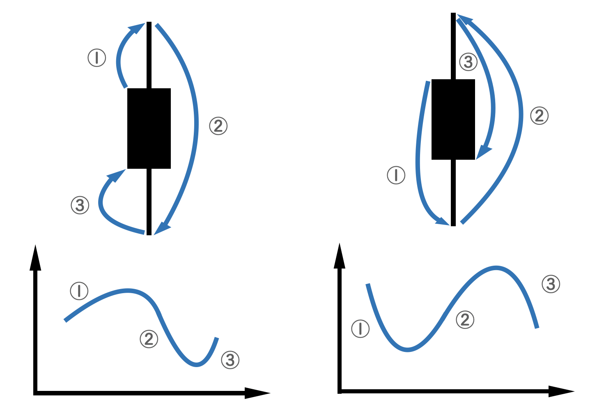
陰線で考えられるパターンは2通りで、
①②③の順番に、
始値 → 最高値 → 最安値 → 終値
始値 → 最安値 → 最高値 → 終値
もちろん実際のチャートがこんなに単純になるとは限らない。
①②③のそれぞれで最安値から最高値までの範囲内で乱高下している可能性もある。
ただローソク足から読み取れるのは4つの値なので上の図の簡単なパターンさえ理解できれば、ローソク足で表現される意味合いも理解できると思う。
（陽線も陰線同様）
ローソク足の種類
ローソク足は形状によって意味合いが異なる場合がある。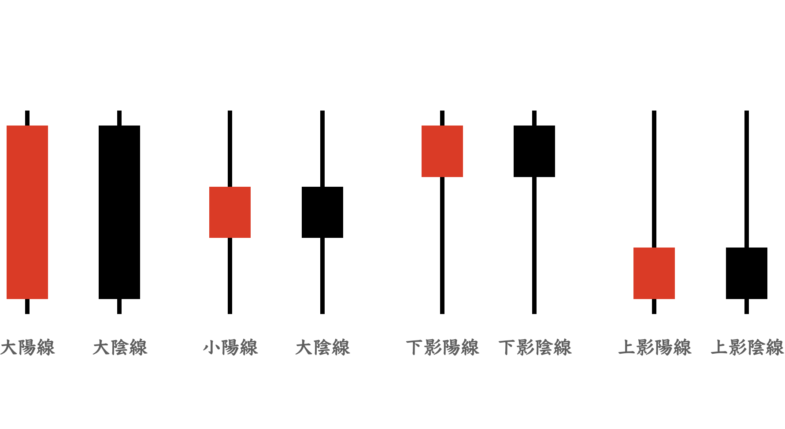
陰線、陽線に関わらず、実体が大きいほど勢いがあることを示す。（ベクトルみたい）
ひげが長いほど、振り戻し（反動）が大きいことを示す。
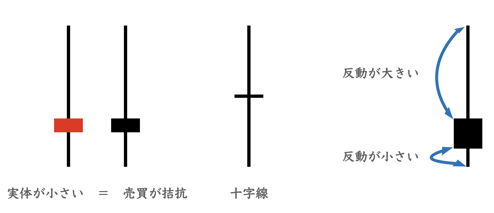
ひげが長いのは一時的に値上がり、あるいは値下がりしたが最終的には戻したということを意味する。
十字線（寄引同時線）は実体のないローソク足で、相場転換の予兆とされている。
複数のローソク足の合成
合成なんていうと本当にベクトルみたい。ローソク足は基本的に一本だけで判断するものではない。
相場の中でのローソク足のパターンを考える。
一本のローソク足で矢印をイメージしたのと同様に、複数のローソク足も矢印で辿っていくイメージがわかりやすいと感じた。
もっと大雑把に矢印を引くなら下図の右のように大きな矢印を引いても良いかもしれない。
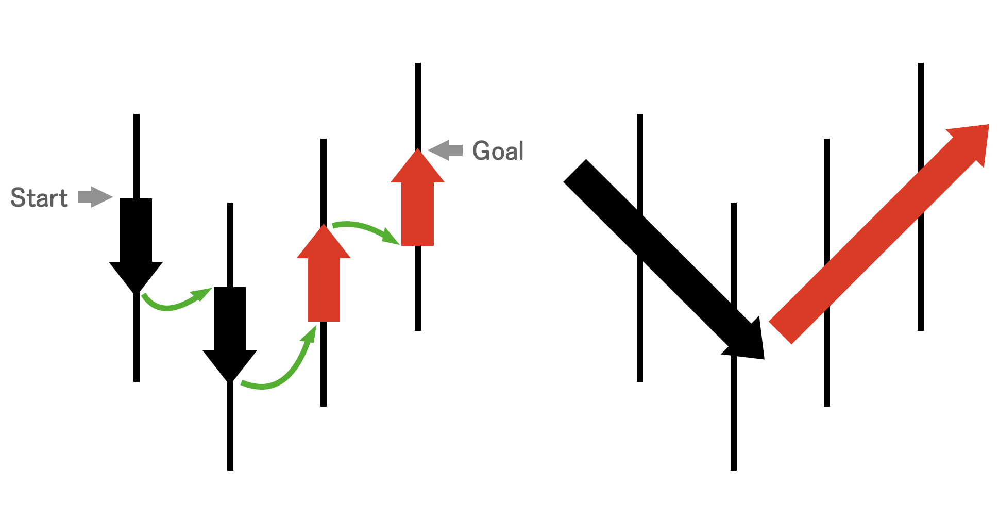
酒田五法
酒田五法の酒田は山形県酒田市のことだそう。数年前に酒田市近くに立ち寄り、お世話になったことがあるので個人的にはなんだか親近感が湧く。
また色々落ち着いたら行きたいな。
五法はそれぞれ、兵・山・川・空・法 となっている。
三兵
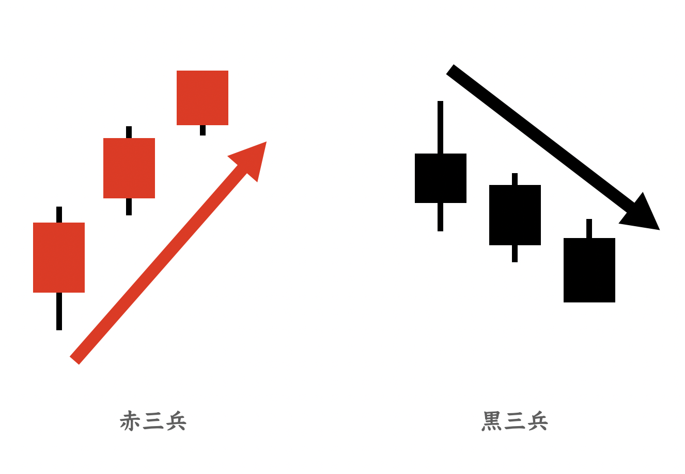赤三兵
三兵行進ともいう。
陽線が連続しているので強気相場と考える。
今後も上昇すると考え、順張り。
黒三兵
三羽烏ともいう。
陰線が連続しているので弱気相場と考える。
下落が継続すると考え、順張り。
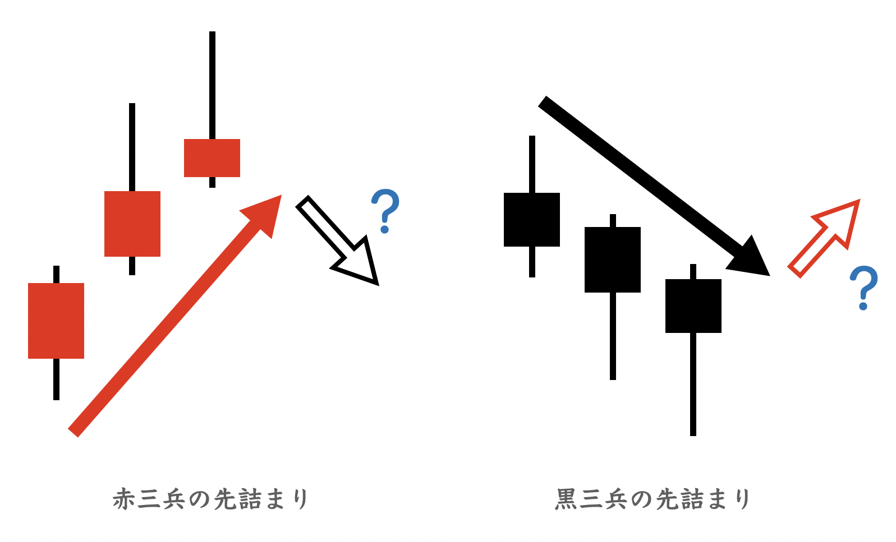
赤三兵の先詰まり
陽線が連続しているものの、上ひげが長く出ているパターン。
長い上ひげは相場が一時的に上昇したが、終値では下落したことを示す。
そのため継続した上昇は疑わしい。
黒三兵の先詰まり
陰線が連続しているものの、下ひげが長く出ているパターン。
長い下ひげは相場が一時的に下落したが、終値では上昇したことを示す。
そのため継続した下落は疑わしい。
三山
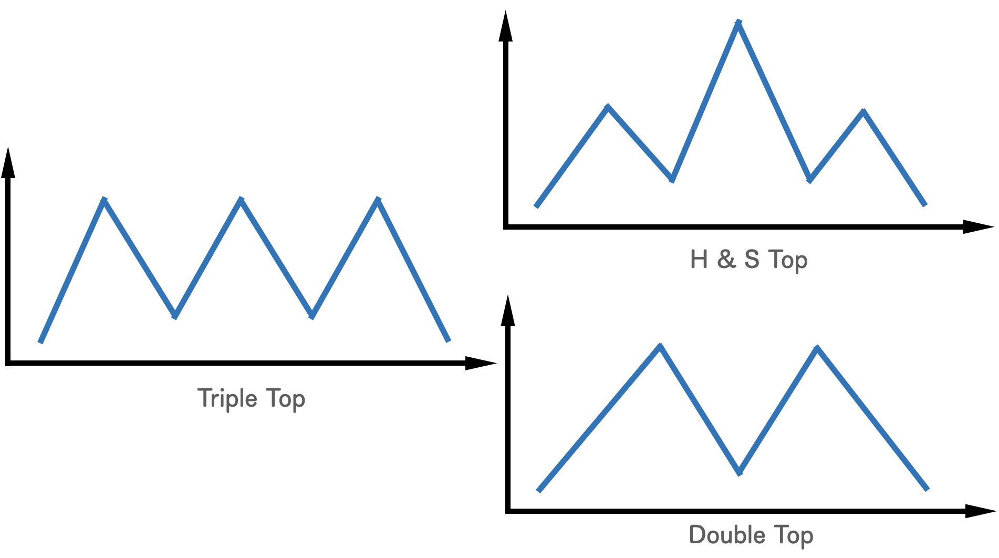三山 (Triple Top)
チャートが三つの山を形成。
3回も高値を更新できなかったから下がるだろうと考える。
三尊 (Head and Shoulders Top)
三山に類似しているが、真ん中の山が最も高くなる。
三山同様、下がると考える。
ダブルトップ
二つの山を形成。
三つの山より出現頻度は高いが、相場下落の予兆として使われる。
三川
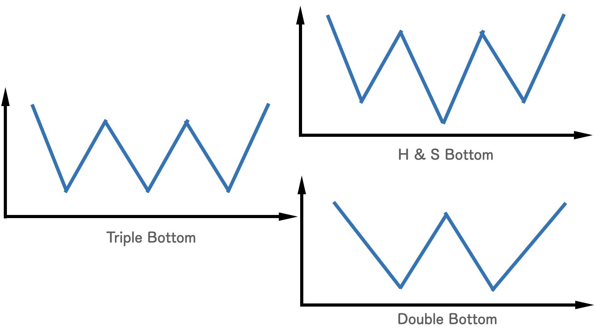三川 (Triple Bottom)
三山の上下が反転したもの。
3回も底を打ったから上がるだろうと考える。
逆三尊 (Head and Shoulders Bottom)
三尊の逆。
三川同様、上がると考える。
ダブルボトム
二つの谷を形成。
三つの谷より出現頻度は高いが、相場上昇の予兆として使われる。
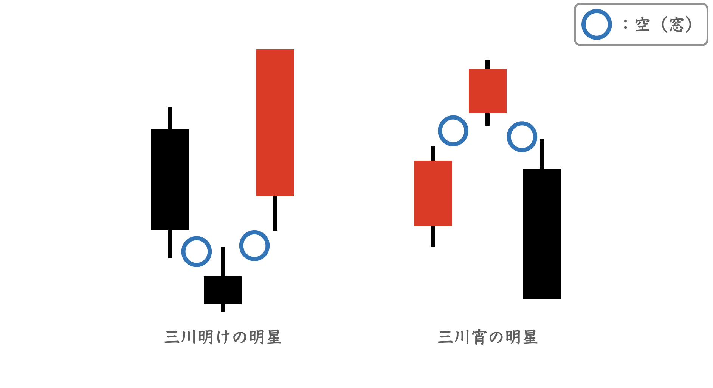
三川明けの明星
窓を開けるほど大きく下がったものの、２本目のローソク足の実体は小さい。
打って変わって反対方向に窓を開けて大きく上昇する。
三川宵の明星
窓を開けるほど大きく上がったものの、２本目のローソク足の実体は小さい。
打って変わって反対方向に窓を開けて大きく下落する。
三空
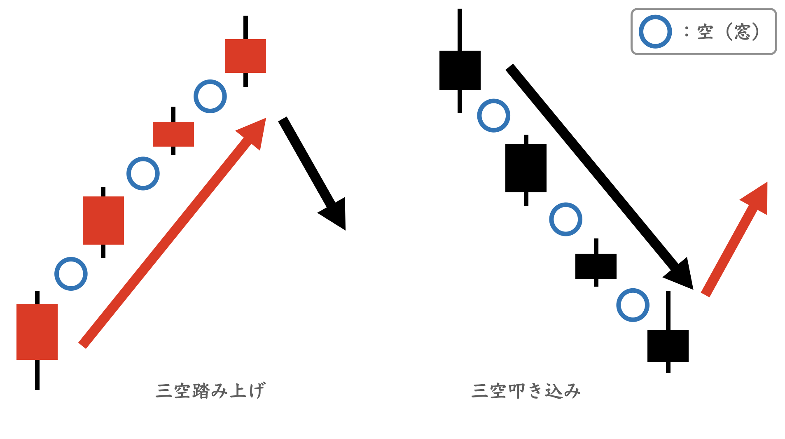三空踏み上げ
空（窓）ができるほど、相場が急激に上昇。
衝動的な心理に起因すると判断し、逆張りで下がると考える。
三空叩き込み
踏み上げの反対。
空（窓）ができるほど、相場が急激に下落。
衝動的な心理に起因すると判断し、逆張りで上がると考える。
三法
休むも相場という言葉もあるように、ボックス相場では静観し、相場が動き出したら取引を開始する。
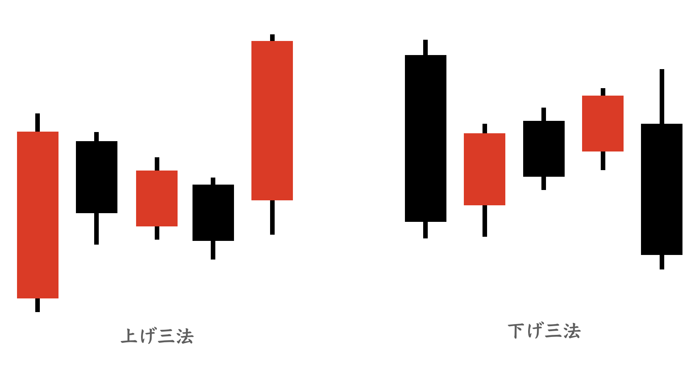
上げ三法
ボックス相場の高値を抜けたら、上昇すると考える。
下げ三法
ボックス相場の安値を抜けたら、下落すると考える。
メンタル
- 仁：ここぞというチャンスまでは我慢
- 勇：チャンスが到来したら度胸
- 智：ステレオタイプに囚われず、柔軟に対応
テクニカルも大事かもしれないが、それ以上にメンタルが大事な気がした。
ローソク足や酒田五法だけを頼って判断するのではなく、他のシグナルも使って信頼性を高めたい。
この記事が私の弟やあなたの役に立ちますように。
記事内容に誤りなどがございましたら、
Twitterなどで優しくお知らせいただけると幸いです。
2022/03/05